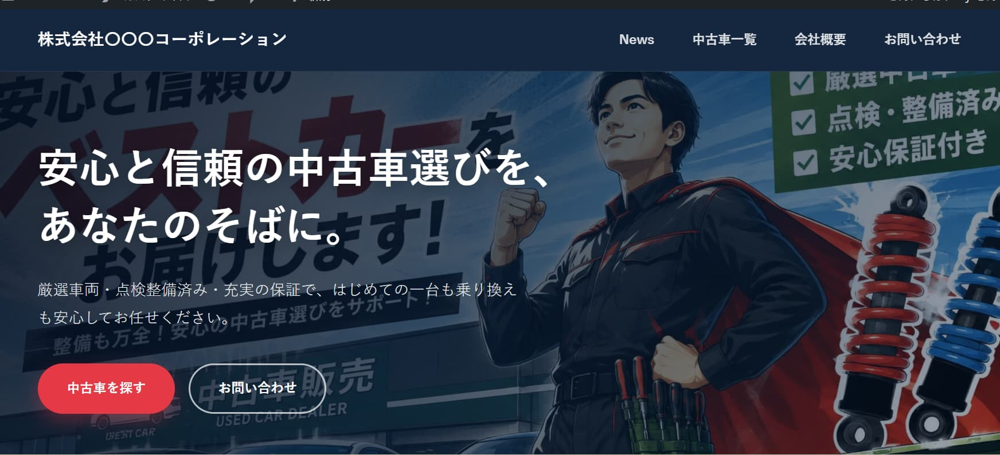
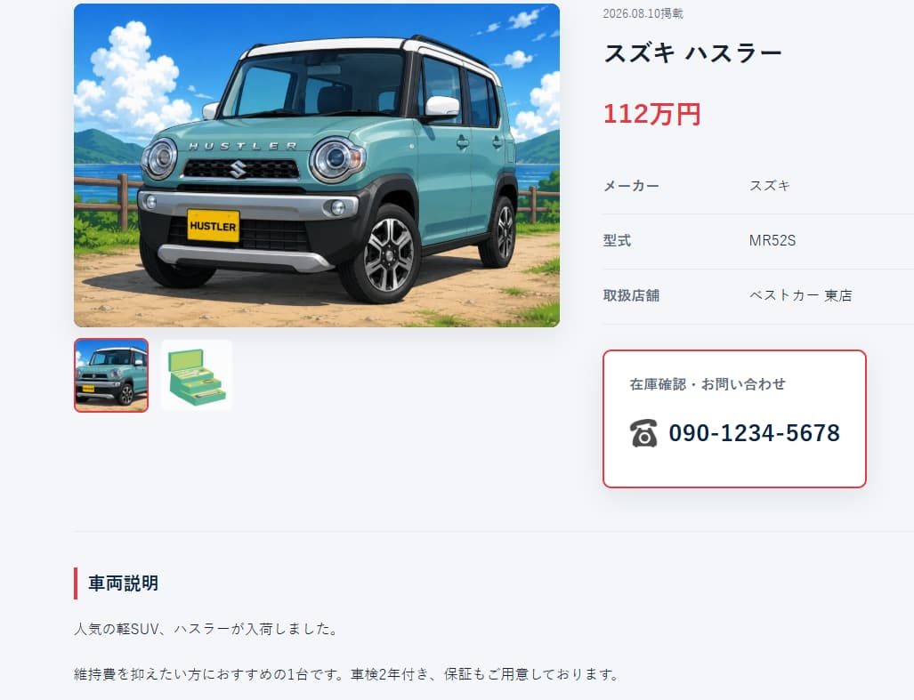
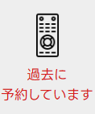
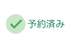
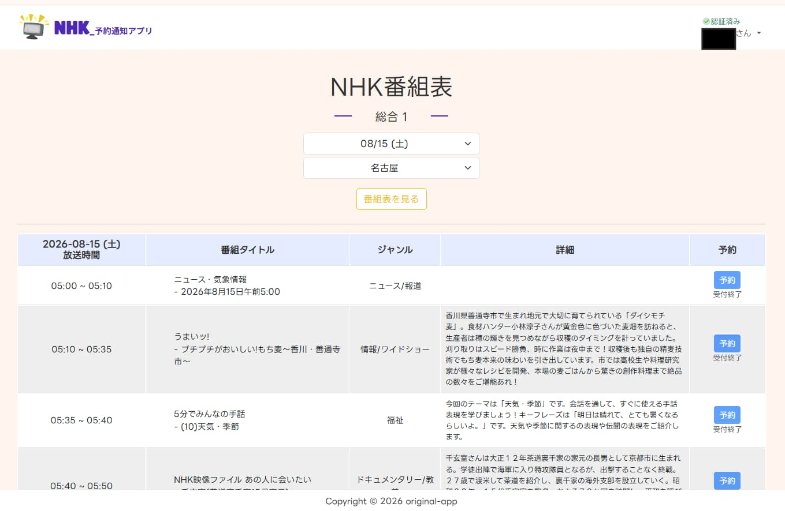
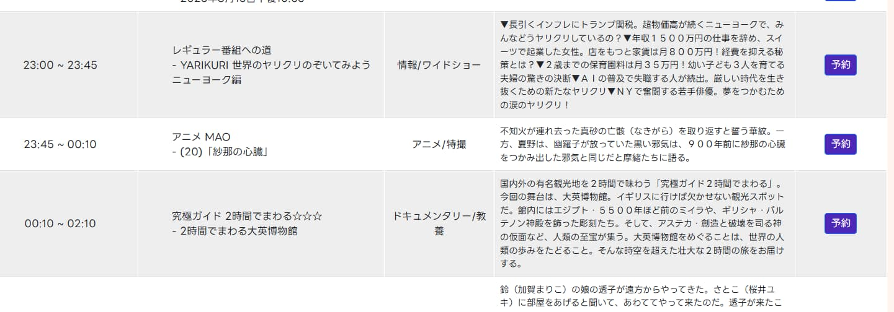
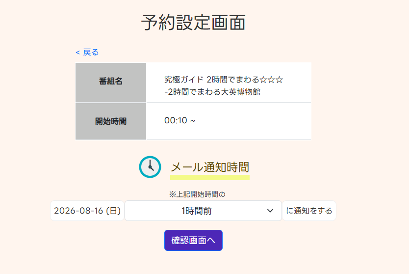
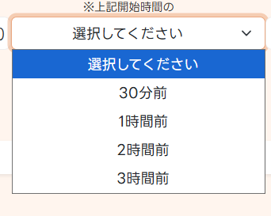
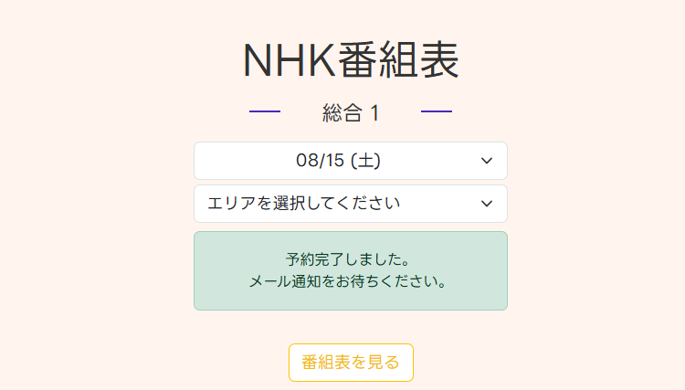
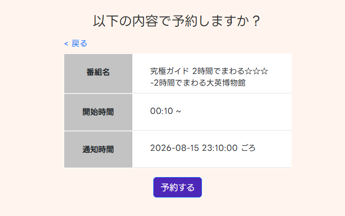

ある方は悩んでいました。
Aさん「うーん、中古車たくさんの人に見てもらいたいし、来店数も増やしたい。」
Bさん「サブスクにお金を使いたくない。でも、TV番組も見逃したくない。」
カーセンサー風 中古車販売サイト
使用言語
PHPversion 8.2
フレームワーク
WordPressversion 7.0
データベース
MySQLversion 8.4
GitHubへ遷移
以下は、トップページです。スクロールしていくと、、、

さらにスクロールしていくと、、、

さらに、、、

申し訳ありません！以降、手を抜いています。
見て頂きたかったのは、上記２つのコンテンツです。これは、この後紹介する管理者画面で投稿するだけで、自動的にトップページへ反映されます。フォーム入力と画像選択を直感的に操作でき、とても簡単です。スクロールを進めていってください。

ログイン完了後、以下の管理者画面が開きます。
今回の中古車販売サイトを例でいうと、使う項目は赤枠内の二つです。”中古車を追加”をクリックすると、、、


以下のようなフォーム入力画面が開きます。
スクロールしていくと画像選択ボタンがあるので、クリックして頂くと自身のエクスプローラが起動します。必須項目を入力して、画面右側にある赤枠内の”公開”をクリックすれば完了です。


編集や、削除も可能です。数が多くなる場合には、検索機能やページネーションを加える事でユーザビリティが向上します。 News（お知らせ）も、使い方は同じ要領です。例えば、ご来店時（サイト記載のキーワード提示頂ければ）ドリンク一杯無料と促し、店内では売上アップに繋がる催しを施しておく。なんていう使い方も想像できます。

車両をクリックすると、詳細画面が開きます。現物が見たいとなった時にすぐ連絡先が分かるような構成をとりました。写真の撮り方等、ここで購買意欲を沸かせるアプローチをしたい所です。ちなみに取扱店舗は架空のものです。

さて、冒頭でのAさんの悩みは解決したでしょうか？
いえ、サーバに乗せなければ何も始まりません。えっと、chown、、、?
ワッツ?の状態であったインフラ未経験の私が、レンタルサーバやVPSで公開できるまでになりました。半端ではない難しさで、今でも自身がフリーズする場面はよくあります。しかし、学習を続けていく中で”学び”の大切さが芽生えていきます。（遅）
そんな初学者の私が、Bさんの悩み解決に向けて挑みます。続きを読んで頂けると嬉しいです。
日本放送協会(NHK) 予約通知アプリ
▲▲ 現在作成中 ▲▲
使用言語
PHPversion 8.2
フレームワーク
Laravelversion 10.50
データベース
MySQLversion 8.0
GitHubへ遷移
仕様はシンプルです。ユーザーが予約したい番組を選び、（選択肢の中から）通知時間を指定するというもの。
なぜ、NHKなのかは置いておいて、一番先に考えたのは、
右の画像のようにユーザーへ視覚的に知らるためのアプロ
ーチでした。未然に間違い等も防げます。これを実現させ
るためにNHKさんが公開しているWebAPIを利用しました。
少し専門的な話になりますが、テーブル設計の段階で、番
組に紐つくプロパティを特定しておく必要がありました。
ここの部分においては、後半で説明したいと思います。こ
のプロパティの特定は、ひいてはアプリとして機能するか否
かを決めるくらい、とても重要でした。実際にコーディン
グより、はるかに時間を費やし、挙句の果てには特定でき
ませんでした。NHKさんのホームページにWebAPIについて、
問い合わせできるフォームがありましたので、そこから問
い合わせました。２日後、返信が届きました。丁寧な説明
でとても分かりやすく、開発に向けてモチベーションがV
字回復したのを覚えています。あの時、対応してくださっ
た方、本当にありがとうございました！


前置きが長くなってしまいました。以下はログイン後の画面です。認証受けないと”予約ボタン”は表示されない仕様です。日付（向こう１週間）と地域を選択し、”番組表を見る”をクリックすると、番組表が展開されます。次に予約のプロセスをみていきます。

実際に予約可能な時刻までスクロールし、以下の操作で予約完了です。初学者なりに考慮した点は、ユーザーが誤操作を起こさないよう操作対象を極力減らした所や、確認画面を挟んだ所です。しかし、こうして振り返ると、開始時間に西暦が入っていなかったり、直すところは結構ありそうです。
「”予約ボタン”をクリック →
通知時間の指定をし”確認画面へ”をクリック →
”予約する”をクリック」





ポイント、ユーザーのフォーム操作によって振る舞いが変わるという所です。例えば、番組表を展開する前に、日付と地域を選びま。それによって、展開される番組表は変わります。もう一つ例として、上記赤枠内を予約しました。赤枠の一つ上の行の”予約ボタン”をクリックしたとしましょう。すると、予約設定画面では、上の行の内容が反映されています。これが実現出来ているのは、もちろんWebAPIのおかげなのですが、こういった振る舞いを作るというのはプログラミングの難しさでもあり、楽しい所でもあります。
途中、”番組に紐つくプロパティを特定しておく必要があります。”と言いました。これが、どうゆう役割を果たすのか。最後にここを熱弁して締めくくろうと思います。（長文必至💦）